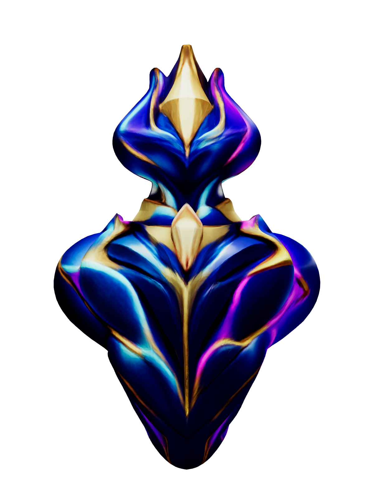

Welcome to the Vibe Atlas
The Vibe Atlas is the Library for the Vibe Architect IDE. It consists of three sections:
- Explore: How to Navigate the IDE and Information on the code Elements
- The AEGIS Atlas: The Foundational Canon and AI Governance Ethos of the IDE
- Behind the Vibe: About the Vibe build team and the discipline used during the build
